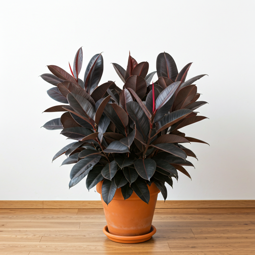
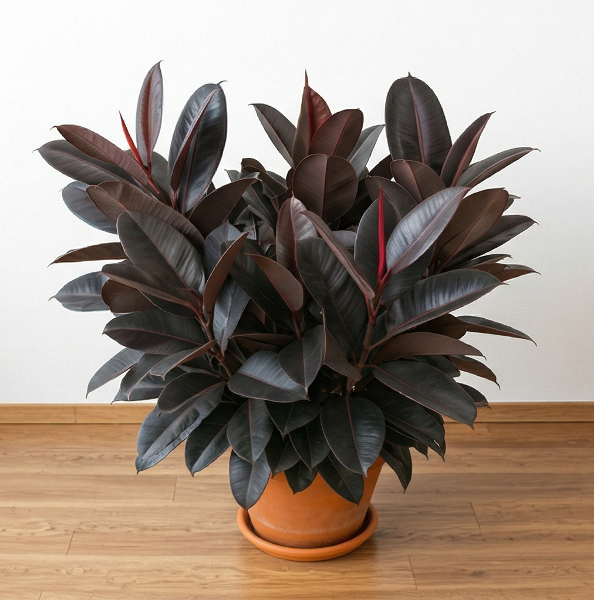
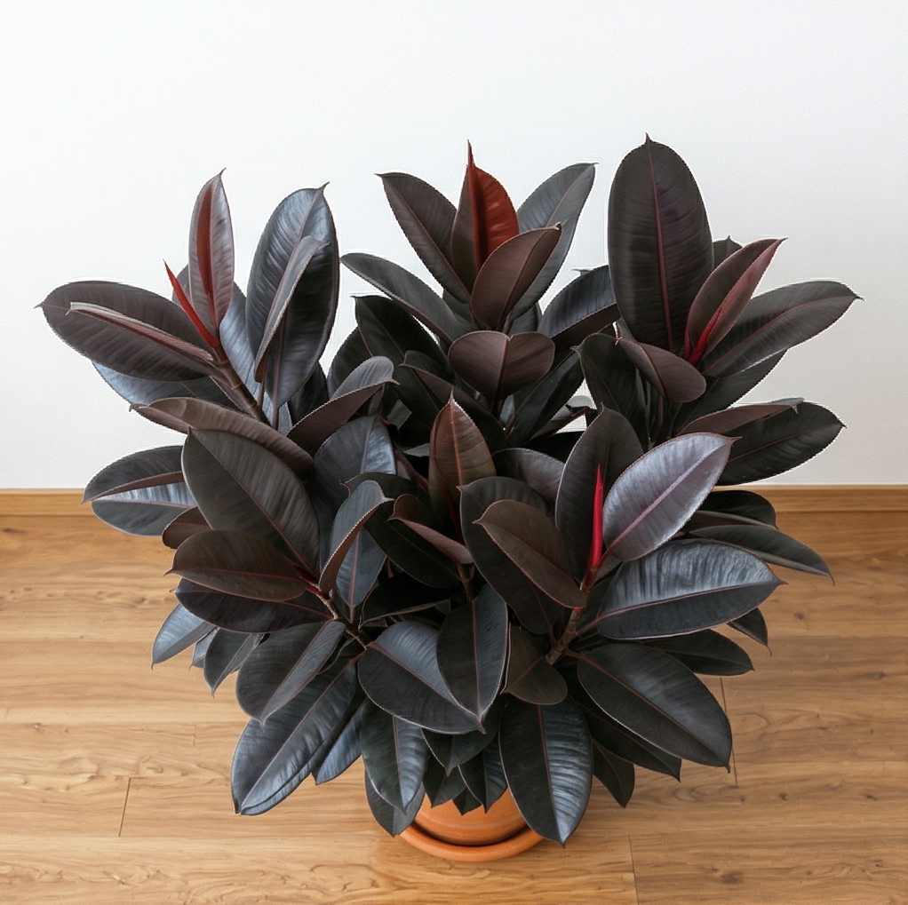

Ficus Elastica Tinto
Hojas profundas con acabado satinado para espacios contemporáneos con acentos minerales.
MXN $2,290
Contemporáneo Orgánico
Indirecta a Semi-directa
Baja
Galería


Características Botánicas
Nombre Científico
Ficus elastica 'Tinto'
Origen
Asia Tropical - India
Altura Típica
1.5 - 2.0 metros en interiores
Crecimiento
Moderado, muy resistente
Guía de Cuidados
💧 Riego
Cada 7-10 días cuando el sustrato esté seco. Es muy tolerante a variaciones de riego. Evita encharcamientos.
☀️ Luz
Indirecta a semi-directa. Tolera sombra parcial. A más luz, más oscuro su follaje. Gira regularmente.
🌡️ Temperatura
15°C - 26°C. Planta muy resiliente. Crece bien en temperaturas moderadas.
✨ Mantenimiento
Limpia las hojas cada dos semanas para realzar su brillo. Fertiliza en primavera-verano.
El Consejo del Asesor
"Limpiar sus hojas con un paño húmedo para mantener el brillo profundo que absorbe la luz ambiental. El Ficus Elastica es la planta perfecta para quienes comienzan su viaje botánico: prácticamente indómita y capaz de transformar cualquier rincón."
— Equipo Intemporal